Outline
- Flow Networks and Maximum Flow Problem
- Ford Fulkerson Method and Concepts
- Ford Fulkerson Algorithm
- Edmonds-Karp Algorithm (FF on a leash)
- Maximum Bipartite Matching
Flow Networks and Maximum Flow Problem
Many problems involve modeling flow through networks, to maximize flow or look for vulnerabilities.
Includes liquids through pipes, materials through transportation networks, and communication networks.
Flow algorithms also have applications to problems that don't look like flow, such as scheduling.
Flow Networks
A flow network is a directed graph G = (V, E) where each edge (u, v) has a capacity c(u, v) ≥ 0, and:
- If (u, v) ∉ E then c(u, v) = 0.
- If (u, v) ∈ E then reverse edge (v, u) ∉ E. [*]
- A vertex s is designated as the source vertex.
- A vertex t is designated as the sink vertex (or t for "target").
Comments:
- [*] Can work around this restriction. (Also, some authors require that (v, u) ∈ E, but this is because they are using G simultaneously for what we will do with two graphs.)
- We assume that each vertex v lies on a path from source s to sink t. (A v that does not will not participate in any flow, so can be ignored.)
A simple example: the trucking capacity network:
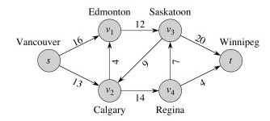
Flow (Not Csikszentmihalyi's!)
A flow for a network is a function f : V x V -> ℜ _ (that is, f assigns numbers to edges)_ satisfying:
Capacity Constraint: ∀ u, v ∈ V, 0 ≤ f(u, v) ≤ c(u, v).
(Can't push more over an edge than its capacity.)Flow Conservation: ∀ u ∈ V - {s, t},
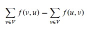
(Flow into a vertex must equal flow out of it, except for the source and sink.)
Example with flow/capacity:
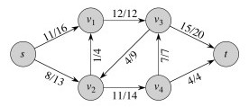
Let's check flow conservation in this network. Also, are we making maximum use of the network? How can we improve it?
Value of Flow
The value of flow f = |f| is the flow out of source minus the flow into the source:
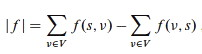
What is the value of flow in the example above?
Excluded Variations
Our formulation disallows anti-parallel edges:
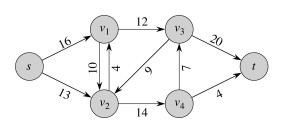
Fortunately they are easy to eliminate. How would you do it? Why not just subtract 4 from 10 to get 6? Click on image to see an alternate solution.
We also require that there be a single source and sink. We can easily convert networks with multiple sources and sinks:
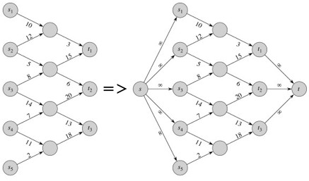
Maximum Flow Problem
Given G, s, t, and c, find a flow f whose value is maximum.
Cuts and Flow
We take a brief diversion into some relevant graph theory.
A cut (S, T) of a flow network G = (V, E) is a partition of V into S and T = V - S such that s ∈ S and t ∈ T.
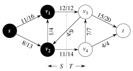
Here is an example of a cut:
The net flow across cut (S, T) for flow f is:
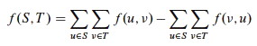
The capacity of cut (S, T) is:
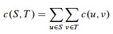
What is the net flow for the cut in this example? The capacity?
Note the assymetry between net flow and capacity of cut: For capacity, count only edges going from S to T, ignoring those in reverse direction. For net flow, count flow on all edges across the cut: flow on edges from S to T minus flow on edges from T to S. Why does this assymetry make sense?
Examples
Consider the cut S = {s, w, y}, T = {x, z, t} in the network shown.
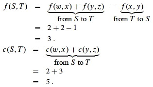 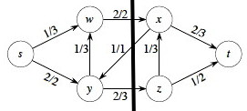
Now consider the cut S = {s, w, x, y}, T = {z, t}.
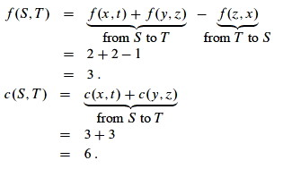 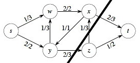
We get the same flow as the previous cut, but higher capacity. It is not an accident that changing cut can change capacity but not flow. Can you explain why?
Minimum Cut
A minimum cut of G is a cut whose capacity is minimum over all cuts of G.
Useful Facts
The proofs of these are straightforward but involve long manipulations of summations: see text.

Lemma
For any cut (S, T), f(S, T) = |f|
(the net flow across any cut equals the value of the flow).
The intuition is that no matter where you cut the pipes in a network, you'll see the same flow volume coming out of the openings. If you did not, conservation would be violated at some nonempty subset of the vertices.
Corollary
The value of any flow ≤ capacity of any cut.
This is again intuitive under the plumbing analogy: if it were false, you could push more flow through the pipes than they can hold.
Ford Fulkerson Method and Concepts
This is a method, not an algorithm, because there are many ways to do it.
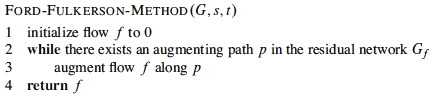
The intuition behind this method is simple: Find a pathway (an augmenting path) of unused capacity and increase the flow along that pathway. Repeat until no such pathways are found.
What makes this nontrivial is an apparent paradox: overall flow can sometimes
be increased by decreasing flow along certain edges (because they flow in the
"wrong" direction or move capacity to a part of the network that can't handle
it as well).
_ See whether you can find an example in the graph shown._
Ford Fulkerson manages this by constructing a parallel network of the available or residual capacity. We will return to the method after explaining these concepts.
Residual Network
Given a flow f in a network G = (V, E), consider a pair of vertices u, v ∈ V. How much additional flow can we push directly from u to v? This is the residual capacity:
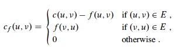
The first case says that if we have not used the full capacity c(u, v) of an edge (u, v) in E then we can increase it by the difference.
The second case says that if we are using f(v, u) of the capacity of (v, u) in E then we have the residual "capacity" of reversing (cancelling) that much flow in the reverse direction (u, v) (notice that the letters are swapped).
Otherwise there is no residual capacity between u and v.
We record these capacities in the residual network Gf = (V, Ef), where
Ef = {(u, v) ∈ V x V : cf(u, v) > 0}.
Each edge of the residual network can admit a positive flow.
Example
A flow network is on the left, and its residual network on the right.
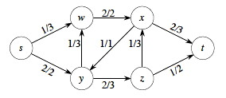 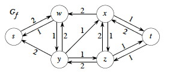
For example, Gf says that we can add two more units from s to w in G or we can take one unit back. (Take a little time to understand the relationship between the two graphs: it's critical, so don't go on until you do!)
Every edge (u, v) ∈ Ef corresponds to (u, v) ∈ E or (v, u) ∈ E or both. So, |Ef| ≤ 2 |E|
A residual network is similar to a flow network, except that it may contain antiparallel edges.
We can define flow in a residual network that satisfies the definition of flow, but with respect to cf in Gf.
Augmentation and Augmenting Paths
Given flows f in G and f ' in Gf, define the augmentation of f by f ', ** f ↑ f '**, to be a function V x V -> ℜ:
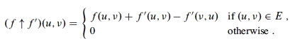
for all u, v ∈ V.
In English: Increase the flow on (u, v) by f '(u, v), but decrease it by f '(v, u) because pushing flow on the reverse edge in the residual network decreases the flow in the original network.
Another Lemma
Given flow network G, flow f in G, and residual network Gf, let f ' be a flow in Gf. Then f ↑ f ' is a flow in G with value |f ↑ f '| = |f| + |f '|.
(A proof with lots of summations in the CLRS book shows that the capacity constraint and flow conservation properties are met, and demonstrates that the value of _f ↑ f ' is correct. The proof is easy to follow but more than I want to write here; see CLRS.)_
Augmenting Paths
Any simple path p from s to t in Gf is an augmenting path.
Augmenting paths admit more flow along each edge in Gf (because all the edges have positive capacity).
How much more flow can we push from s to t along an augmenting path p? The "weakest link" principle applies:
cf (p) = min{cf(u, v) : (u, v) is on p}.
Example
Here is a flow network (left) and a residual network (right).
Consider the augmenting path p = ⟨s, w, y, z, x, t⟩ in Gf. The minimum residual capacity of this path is ...what???
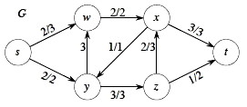
Push that much additional flow along p in G. Notice that the path in Gf goes over G's edge (y, w) in the reverse direction, so we subtract that much flow from the edge in G.
As a result, edge (y, w) has f(y, w) = 0, so we omit the flow, showing only c(y, w) = 3 in the revised G to the left.
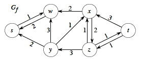
Now let's update the residual network Gf. Make sure you understand how we got the graph to the right before going on.
Is there an augmenting path in Gf?. How can we tell?
Notice that no edges cross the cut ({s, w}, {x, y, z, t}) in the forward direction in Gf, so no path can get from s to t.
Since no further augmentation is possible, we claim that the flow shown in G is a maximal flow. This theorem tells us we are right.
Max-Flow Min-Cut Theorem (Important!)
The following are equivalent (see text for lemma, corollary and proof):
f is a maximum flow
Gf has no augmenting path
|f| = c(S, T) for some cut (S, T).
This means that if (2) we can't find augmenting paths or (3) have achieved a flow equivalent to the capacity of some cut, then we are done: (1) we have found the maximum flow.
(3) also lets us predict what the max flow will be: it will be equal to the capacity of the minimum cut (as measured by capacity). Hence "max flow is min cut".
Ford Fulkerson Algorithm
Intuition: keep augmenting flow along an augmenting path until there is no augmenting path. The flow attribute is represented using dot notation on edges: (u, v).f.
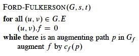
or in more detail
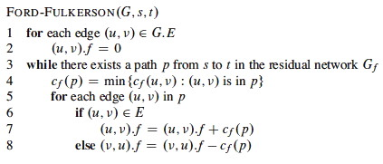
(Line 7: adding flow. Line 8: reducing flow.)
Analysis
Runtime depends on what costs can be, and method used to find paths.
Best to use integer weights when possible. (If capacities are irrational numbers, Ford-Fulkerson might never terminate!)
The initialization lines 1-2 is O(E).
The cost to find a path p from s to t in line 3 depends on the method used. Breadth-First-Search or Depth-First-Search will work, and these are O(V + E). This is a connected graph, so |E| ≥ |V| − 1, so this reduces to O(E).
The rest of the work in the while loop is of lower complexity, so the work
of each pass of the while loop is O(E).
How many times will the while loop run? The worst case scenario is:
- If all capacities are integer, each augmenting path raises |f| ≥ 1.
- In the worst case, it is possible for each augmenting path to raise |f| by only 1, so if the maximum flow is f* then f* iterations may be needed.
- Each iteration costs E, so worst case is O(E f*).
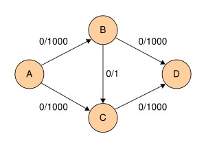
The example to the right illustrates the classic worst case scenario. One could:
- find augmenting path ⟨(A,B), (B,C), (C,D)⟩, increasing flow by 1 to 1; then
- find augmenting path ⟨(A,C), (C,B), (B,D)⟩ (notice that this uses the antiparallel edge in the residual graph to subtract flow from (B,C)), increasing flow by 1 to 2; then
- find augmenting path ⟨(A,B), (B,C), (C,D)⟩, increasing flow by 1 to 3; then
- find augmenting path ⟨(A,C), (C,B), (B,D)⟩, increasing flow by 1 to 4; then ...
... requiring 2000 iterations due to the unlucky choice of augmenting paths.
Edmonds-Karp Algorithm (FF on a leash)
Edmonds-Karp come to the rescue with an insight that controls the order in which Ford-Fulkerson explores paths.
Notice that in the example above, if the shortest paths (by number of edges, not considering weight) are considered first, then the anomaly does not occur. We would find augmenting path ⟨(A,B), (B,D)⟩ to increase flow by 1000, then finish the job with augmenting path ⟨(A,C), (C,D)⟩, or find the second and then the first.
Edmonds-Karp is the Ford-Fulkerson algorithm but with the constraint that augmenting paths are computed by Breadth-First Search of Gf. (_ I told you that those search algorithms are widely useful!_)
A proof in the CLRS text shows that the number of flow augmentations performed by Edmunds-Karp is O(VE). Since each BFS is still O(E) in a connected graph, Edunds-Karp runs in O(V E2) time. The proof in CLRS works by bounding distances to vertices in Gf.
Even better bounds are possible: this has been a very active area of algorithm development. Sections 26.4-26.5 of CLRS describe push-relabel algorithms that are as fast as O(V3). The notes at the end of the chapter discuss faster algorithms.
There are many variations of Maximum Flow, such as including multiple sources and sinks; including costs and trying to minimize cost; including different kinds of material that take different capacities to transport; etc. Some can be very difficult to solve.
Maximum Bipartite Matching
Maximum Flow can also be used to solve problems that don't look like flow problems. Here is an example.
Suppose we want to maximize ...
- The number of boys and girls who can dance, given a list of who is willing to dance with whom (a.k.a. the "marriage problem").
- The number of classes that can be scheduled, given a list of which classes can be held in which rooms.
- The number of tasks that can be performed by some machines, given that some tasks can only be performed by some of the machines.
... etc. We make a bipartite graph G = (V, E) where V = L ∪ R such that all edges go between L and R.
A matching is a subset of the edges M ⊆ E such that for all v ∈ V, zero or one edges of M are incident on v. (0: v is unmatched; 1: v is matched; > 1 is not allowed.) Here is one example with two solutions:
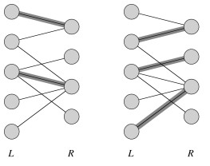
On the left we can see a nonmaximal matching, and on the right a maximum matching, or matching of maximum cardinality: |M| ≥ |M'| ∀ matchings M'.
Solution
Given G, define flow network G' = (V', E'):
- V' = V ∪ {s, t}.
- E' = E augmented with edges from s to every u ∈ L and from every v in R to t.
- c(u, v) = 1 ∀ (u, v) ∈ E'.
Then just run Ford-Fulkerson (Edumunds-Karp is not required, as all edges have unit value):
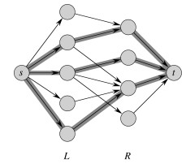
This works because a maximum flow must use the maximum number of (unitary capacity) edges across the cut (L, R).
Run Time Complexity
Previously we established that Ford-Fulkerson is O(E f*).
In the present problem we are running Ford-Fulkerson on E', but E' = O(E) since we are adding no more than V edges (to vertices in L and vertices in R). Also, the flow value f* = O(V) since edges are of unit value and you can't have flow across more edges than there are in min(|L|, |R|) = O(V).
Therefore, bipartite matching can be computed with Ford-Fulkerson in O(VE).
Wrapup
We have just seen an example of problem reduction: reducing the maximum bipartite matching problem to a flow problem and using a flow algorithm to solve it. Last week we saw another problem reduction: solving job scheduling by modeling it as a shortest-paths problem.
Problem reduction is a common theme in computer science. In Topic 21, we will see how the flow problem reduces to the linear programming problem. In later topics, we'll consider reduction of classes of problems known as "P" and "NP", and encounter the greatest unsolved problem in computer science.
Dan Suthers Last modified: Sun Apr 13 00:50:36 HST 2014
Most images are from the instructor's material for Cormen et al. Introduction
to Algorithms, Third Edition. The counter-example is from Goodrich & Tamassia,
and I found the Lemma lemming running around loose on the Internet somewhere.